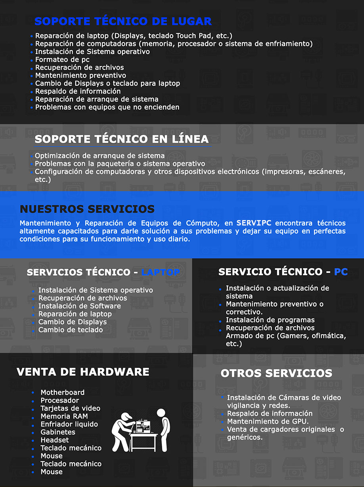

Soporte para tu
SERVIPC es una empresa peruana que cuenta con personal altamente capacitado en la reparación de laptop y reparación de computadoras de todas las marcas, dando servicio a la Ciudad de Lima y el área metropolitana. Para SERVIPC el objetivo es garantizar la satisfacción del cliente, sabedores de que hoy en día sus computadoras son su herramienta principal de trabajo, deseamos que su desempeño no se vea afectado con problemas en sus equipos. El servicio técnico de computadoras de SERVIPC se caracteriza por abarcar cualquier tipo de problemática que presenten sus equipos, trabajando de manera conjunta y multidisciplinaria para lograr los mejores resultados. Además del servicio de reparación, le brindaremos todo el asesoramiento personalizado para luego diagnosticar de forma rápida y precisa las causas del desperfecto, y trabajar de acuerdo a un presupuesto inmejorable. Si tu computadora o laptop presenta problemas contáctanos, nuestros técnicos están altamente capacitados para darle una solución. Contamos con garantía en refacciones y reparaciones, agende su cita y un especialista su pondrá en contacto.
